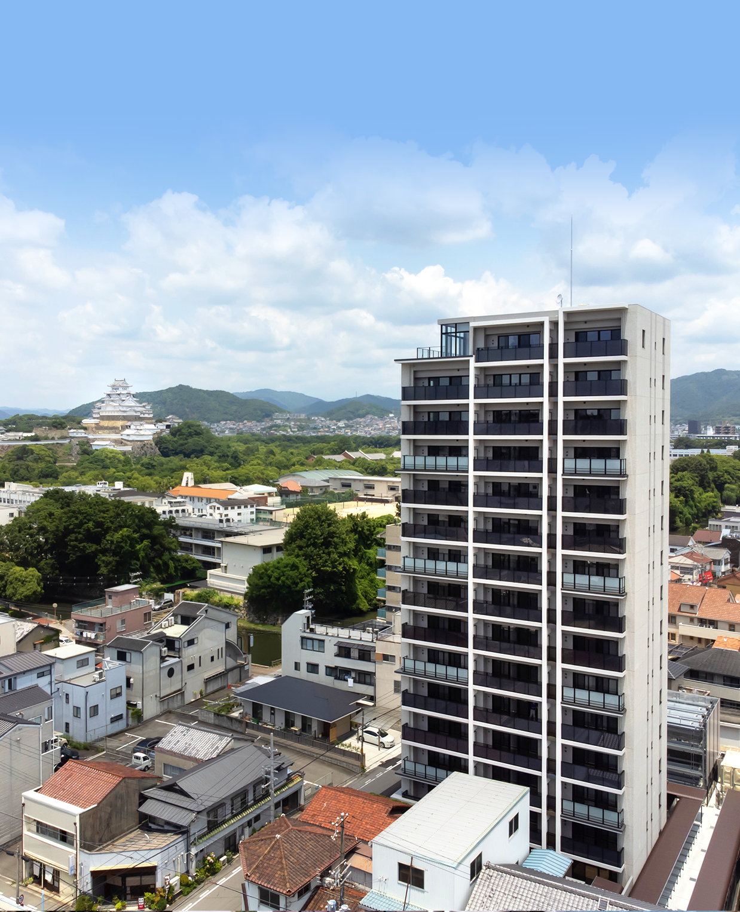

デザインDESIGN
Premium Residence
全邸南向き、1フロア3邸、永住に相応しい
洗練のプレミアムレジデンス
外観
4世紀以上の歴史を紡ぐ姫路城の袂に
今回のプロジェクトは、姫路城の南東方向の旧市街地に位置し、 豊かな住環境が保全され続ける「城巽地区」内であるロケーションが最大の特徴です。 姫路城やその周辺の風景の歴史に寄り添いながら、 姫路城と対峙する集合住宅のあるべき姿とは何かが大きなテーマとなりました。
姫路城への眺望、姫路城からの視認性に配慮することはもとより、 姫路城に調和しながら、このプロジェクトとしてのアイデンティティを携えた美しく落ち着いた意匠や素材、 色彩を吟味し、この地区の新たなシンボルとして地域景観の向上に資するデザインを目指しました。
デザイン監修
杢谷一級建築士事務所
杢谷 真一 氏
SHINICHI MOKUTANI
DESIGN
界隈の歴史と現代が調和する印象的なデザイン
「シエリア姫路城 東」の周辺は、
姫路城の風情や由緒ある街並みを継承する旧市街地に属し、
現在では閑静な住宅地として知られています。
デザインの考え方としては、
姫路城と本プロジェクトの基壇部及びファサードのイメージを調和させることで、
姫路の城巽地区という歴史と街の一体感の形成を図りました。
外観の色彩は高明度・低彩度のものを基調とし、
基壇部には石垣風の設えや格子風デザインを取り入れることで
モダンでありながらも歴史を継承する印象的な意匠としました。
さらに、意匠上マリオンや水平リブにより建築ボリュームを分節し、
ガラス手摺に空の表情を映り込ませること等により、
突出感を軽減するよう配慮しています。
地域景観との調和を鑑みた意匠の作り込み
ENTRANCE
エントランス入口にはシックで落ち着いた色の床・壁タイルを選定。
その対比としてのシンボルツリーを配植し、
姫路城のたもと、永らえてきた「時（歴史）の流れ」を感じさせるデザインとしています。
 エントランス
エントランスENTRANCE APPROACH
エントランスアプローチを進むにつれ、
ところどころに石の造形や木パネル、 ロートアイアン調格子等、
素材感、質感を楽しめるアイテムで彩り、
邸宅へと歩を進めるにつれて、 その高揚感、期待感を醸成させる
優雅なプロムナードとして整えました。
アーティスティックな意匠を施したアプローチシーンが、お出かけとお帰りのひと時を美しく演出します。
 エントランス
エントランス- ※掲載の敷地配置図・1階平面図イメージイラストは、計画段階の図面を基に敷地内及び周辺を簡略化し描き起こしたもので、実際とは異なります。
- ※掲載の写真は2021年6月撮影したものに一部CG加工を施しています。